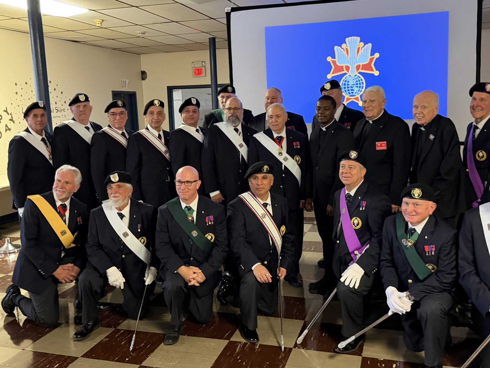
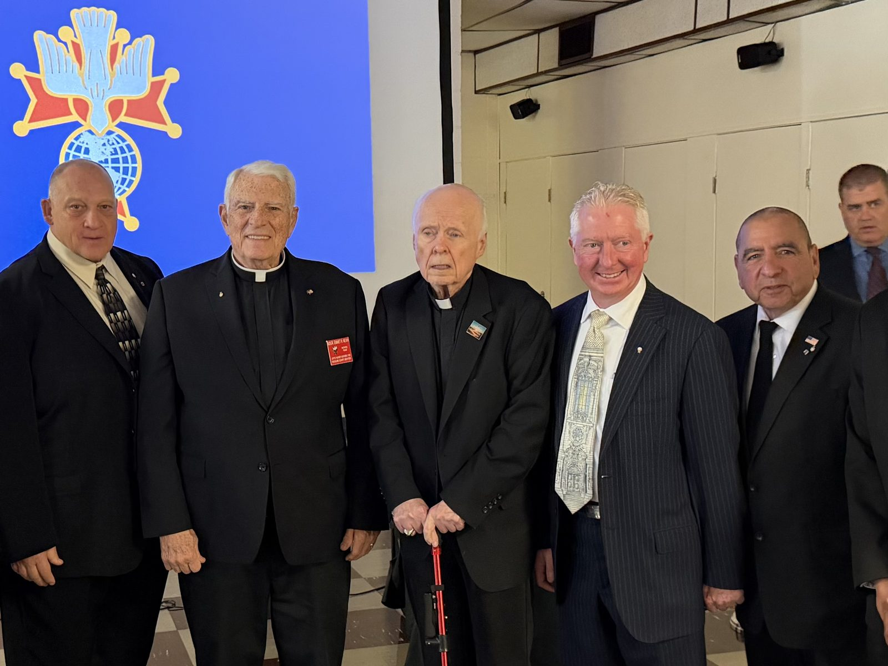
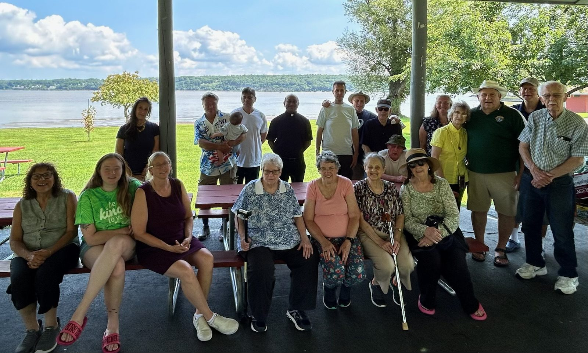
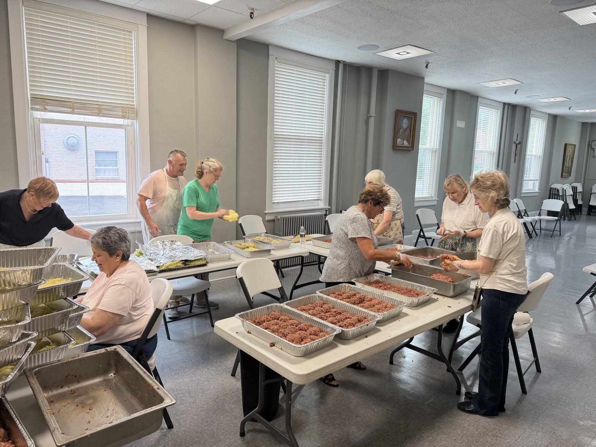
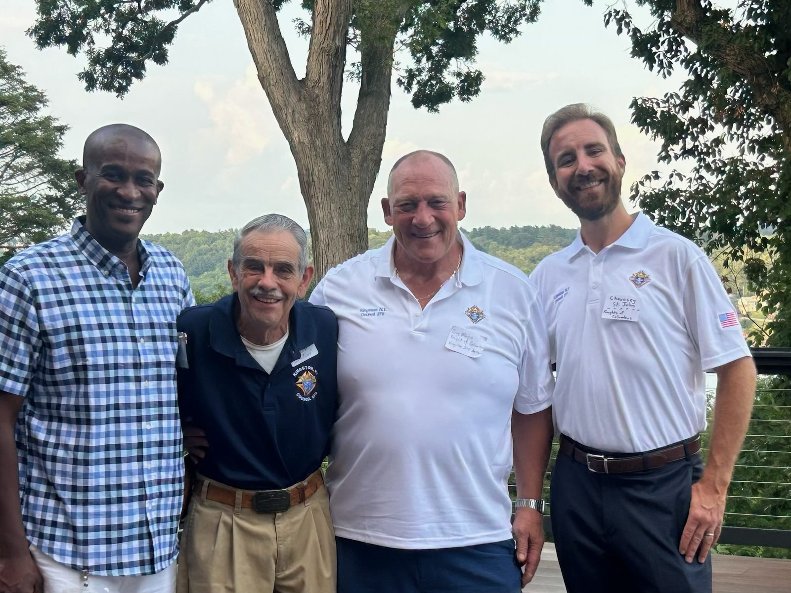
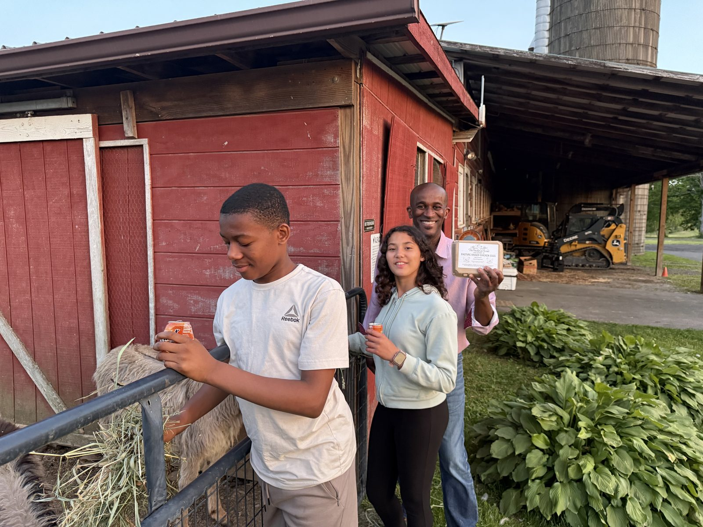

Gallery
Photos
A few scenes from the life of the Council.
Exemplification of the Fourth Degree — October 2026
Brother Knights of Kingston Council #275 travelled to St. Catherine of Alexandria in Blauvelt on Saturday 24 October 2026 for an exemplification of the Fourth Degree — the Patriotic Degree — of the 2nd New York District, St. Isaac Jogues Province.


Around the Council



